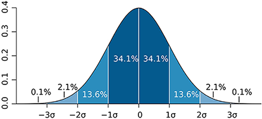
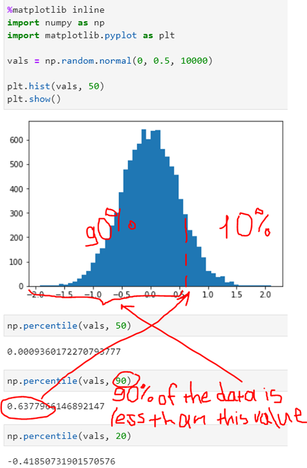

Machine Learning, Data Science and Deep Learning with Python
Udemy
Types of data:
- Numerical: represents some sort of quantitative measurement (heights of people, page load times, stock prices, etc.).
- Discrete: integer based; often counts of some event (how many purchases did a customer make in a year, how many times did I flip "heads").
- Continuous: has an infinite number of possible values (how much time did it take for a user to check out, how much rain fell on a given day).
- Categorical: qualitative data that has no inherent mathematical meaning (gender, yes/no (binary data), race, state of residence, product category, political party, etc.). You can assign numbers to categories in order to represent them more compactly, but the numbers don't have mathematical meaning.
- Ordinal: a mixture of numerical and categorical; categorical data that has mathematical meaning (movie ratings on a 1 - 5 scale: ratings must be 1, 2, 3, 4, or 5, but these values have mathematical meaning; 1 means it's a worse movie than a 2).
Median is less susceptible to outliers than the mean: mean household income in the US is $72,641, but the median is only $51,939 because the mean is skewed by a handful of billionaires. Median better represents the "typical" American in this example.
Mode is not relevant to continuous numerical data.
Variance measures how "spread-out" the data is. Variance (ùúé2) is simply the average of the squared differences from the mean.
Example 1: What is the variance of the data set (1, 4, 5, 4, 8)?
First find the mean: (1+4+5+4+8)/5 = 4.4
Now find the differences from the mean: (3.4, 0.4, 0.6, 0.4, 3.6)
Find the squared differences: (11.56, 0.16, 0.36, 0.16, 12.96)
Find the average of the squared differences: ùúé2 = (11.56+0.16+0.36+0.16+12.96)/5 = 5.04
Standard deviation ùúé is just the square root of the variance. This is usually used as a way to identify outliers. Data points that lie more than one standard deviation from the mean can be considered unusual. You can talk about how extreme a data point is by talking about "how many sigmas" away from the mean it is.
If you're working with a sample of data instead of an entire data set (the entire population), then you want to use the sample variance instead of the population variance:
ùúé2 = (11.56+0.16+0.36+0.16+12.96)/5 = 5.04 (population variance)
ùëÜ2 = (11.56+0.16+0.36+0.16+12.96)/5-1 = 6.3 (sample variance)
Probability density function (for continuous data, gives you the probability of a data point falling within some given range of a given value):
Probability mass function (for discrete data):
Percentiles is the point in a data set at which X% of the values are less than that value.
Moments: The first moment is the mean. The second moment is the variance. The third moment is skew. A distribution with a longer tail on the left will be skewed left, and have a negative skew.
The fourth moment is kurtosis (how thick is the tail, and how sharp is the peak, compared to a normal distribution).


Correlation does not imply causation.
Conditional probability (if I have two events that depend on each other, what's the probability that both will occur):
P(A,B) is the probability of A and B both occurring
P(B|A) is the probability of B given that A has occurred
Example 2: I give my students two tests. 60% of my students passed both tests, but the first test was easier 80% passed that one. What percentage of students who passed the first test also passed the second?
A = passing the first test, B = passing the second test
We are asking for P(B|A) - the probability of B given A75% of students who passed the first test passed the second
Bayes' theorem: the probability of A given B, is the probability of A times the probability of B given A over the probability of B.
The key insight is that the probability of something that depends on B depends very much on the base probability of B and A.
Example 3: Drug testing is a common example. Even a "highly accurate" drug test can produce more false positives than true positives.
Let's say we have a drug test that can accurately identify users of a drug 99% of the time, and accurately has a negative result for 99% of non users. But only 0.3% of the overall population actually uses this drug.
Event A = Is a user of the drug, Event B = tested positively for the drug.
We can work out from that information that P(B) is 1.3% (0.99 * 0.003 + 0.01 * 0.997 - the probability of testing positive if you do use, plus the probability of testing positive if you don't.)So the odds of someone being an actual user of the drug given that they tested positive is only 22.8%.
Even though P(B|A) is high (99%), it doesn't mean P(A|B) is high.